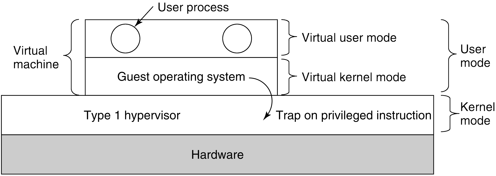

Scenario: a type 1 hypervisor is running a guest OS that thinks it
is the kernel, but really is in user mode.
The guest runs in virtual kernel mode. Its
apps think they are in user mode (and really are).
What happens when the guest executes a privileged instruction?
Normally, this would cause the program to crash. But with VT, the
instruction traps to the hypervisor, and the hypervisor determines
if the guest OS (or at least its kernel)
called it -- OK! -- or a guest application did -- not OK!
So how was this handled before VT was available?
Using techniques like binary translation and
protection rings.
Sensitive instructions are eliminated by re-writing the
guest's kernel code, one basic block at a time.
A basic block is a run of consecutive instructions, where
the instruction pointer advances a single instruction at a
time. Sensitive instructions are replaced with calls to
hypervisor procedures.
Translated blocks are cached, so that they do not need to
be translated again.
Type II hypervisors are little bit different, in that they rely upon the host's device drivers. They are like teenagers hosting a party while their parents are away: they can move everything, so long as it is all back in place when the parents return. This restoration is called a world switch.
Do CPUs with VT outperform software-based approaches?
Not necessarily! VT generates lots of traps, and traps are
expensive.
Sometimes software beats hardware: so sometimes hypervisors
translate anyway, even if there is hardware support.
An example where translation is cheaper:
Turning off interrupts may be very expensive, if there are
deep caches and out-of-order execution.
But a hypervisor need not really turn off
interrupts: it only needs to make it look to the guest OS
as if they are off.
So it can just keep a binary flag per guest OS: much
cheaper!
1. c;